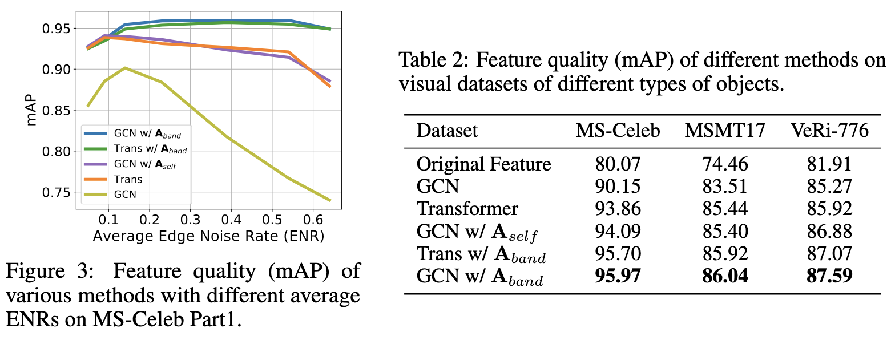
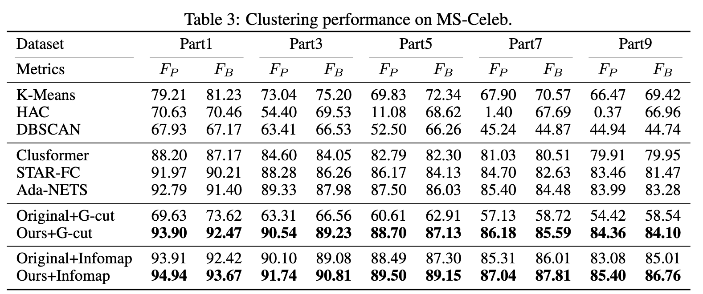
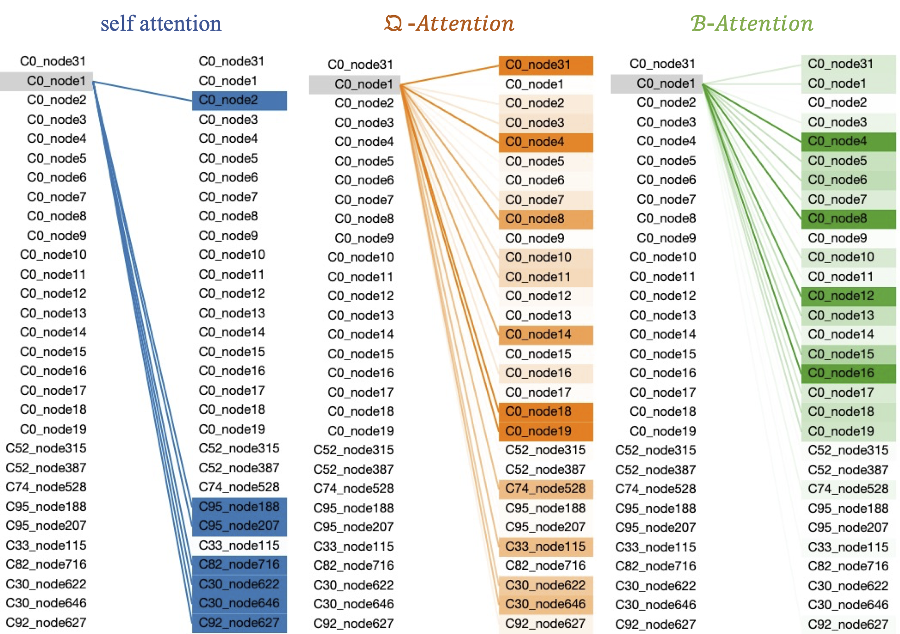

Robust Graph Structure Learning over Images via Multiple Statistical Tests
A novel method for learning robust graph structures in computer vision tasks where graph structures are not available.
A novel method for learning robust graph structures in computer vision tasks where graph structures are not available.
Graph structure learning aims to learn connectivity in a graph from data. It is particularly important for many computer vision related tasks since no explicit graph structure is available for images for most cases. A natural way to construct a graph among images is to treat each image as a node and assign pairwise image similarities as weights to corresponding edges. It is well known that pairwise similarities between images are sensitive to the noise in feature representations, leading to unreliable graph structures. We address this problem from the viewpoint of statistical tests. By viewing the feature vector of each node as an independent sample, the decision of whether creating an edge between two nodes based on their similarity in feature representation can be thought as a {\it single} statistical test. To improve the robustness in the decision of creating an edge, multiple samples are drawn and integrated by {\it multiple} statistical tests to generate a more reliable similarity measure, consequentially more reliable graph structure. The corresponding elegant matrix form named $\mathcal{B}$\textbf{-Attention} is designed for efficiency. The effectiveness of multiple tests for graph structure learning is verified both theoretically and empirically on multiple clustering and ReID benchmark datasets.
Illustration of E(S^k_{i,j}) in Sim-M on two nodes from different categories and the same category and the B-Attention mechanism. The self-attention part is the same as that in Transformers. The Q-Attention part generates A_X and then pay attention to it to generate the A_qart. The two output attention maps are fused as the final output A_band.
Effectiveness of the B-Attention.
Downstream clustering performance on MS-Celeb.
Case studies on self attention, Q-Attention and B-Attention. Each entry contains the category and node index, e.g. “C0_node1” means this node belongs to category 0 and the node index is 1. The shade of the colour represents the weight of attention. The darker the colour, the greater the weight. The data of this case is sampled from the last layer of B-Attention on the MS-Celeb part1.
 @inproceedings{wang2022robust,
title={Robust Graph Structure Learning over Images via Multiple Statistical Tests},
author={Yaohua Wang and Fangyi Zhang and Ming Lin and Senzhang Wang and Xiuyu Sun and Rong Jin},
booktitle={Thirty-Sixth Conference on Neural Information Processing Systems},
year={2022},
url={https://openreview.net/forum?id=VVCI8-PYYv}
}
If you are interested in AIGC, especially digital humans and video generation, and are eager to take on exciting challenges, then this is the place for you. We are looking for talented, motivated and creative individuals to join our team. If you are interested, please send your CV to Yaohua.